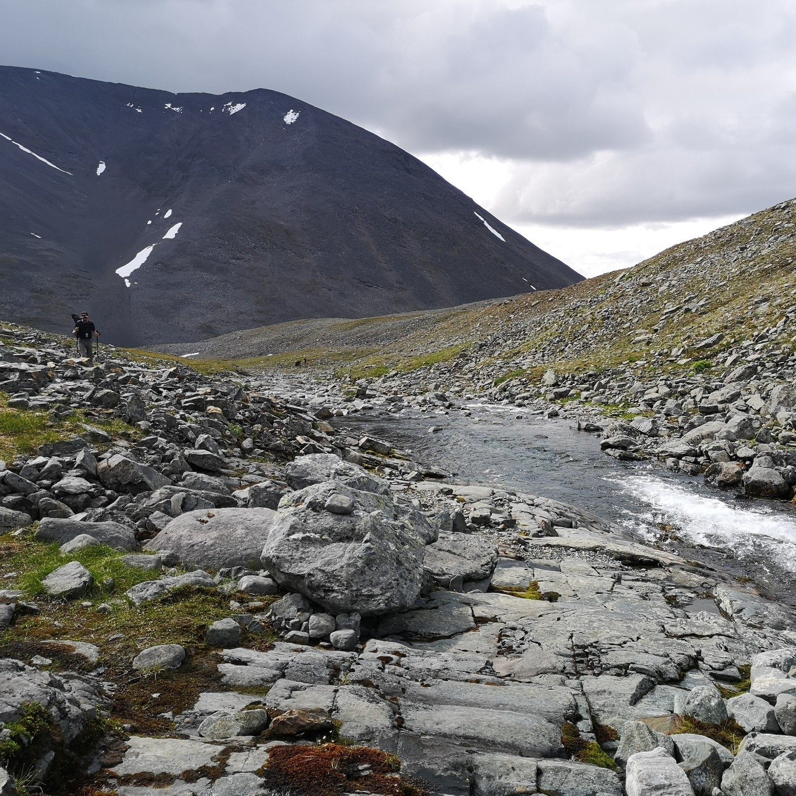
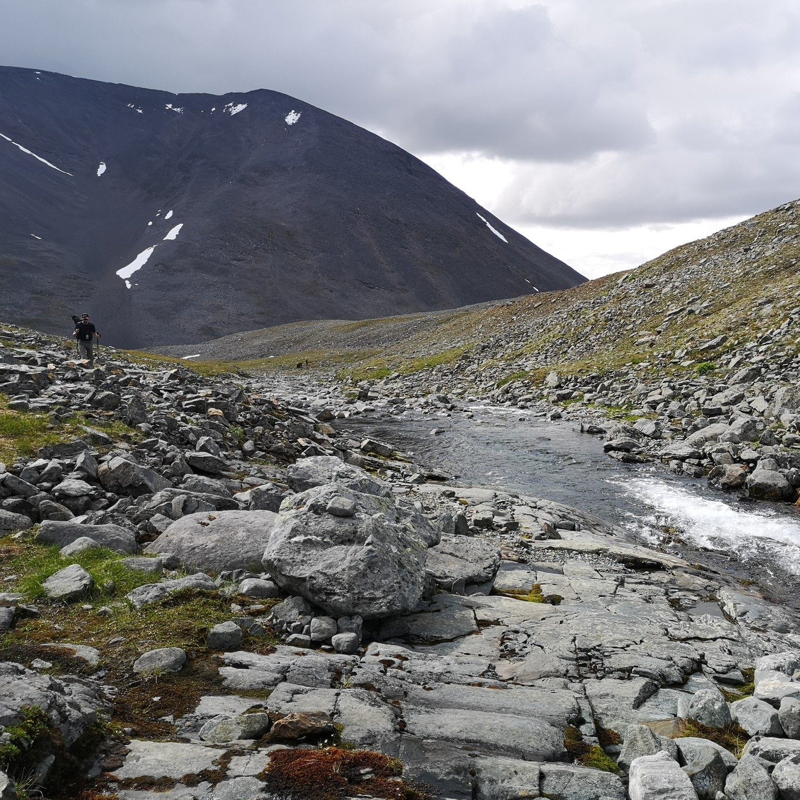
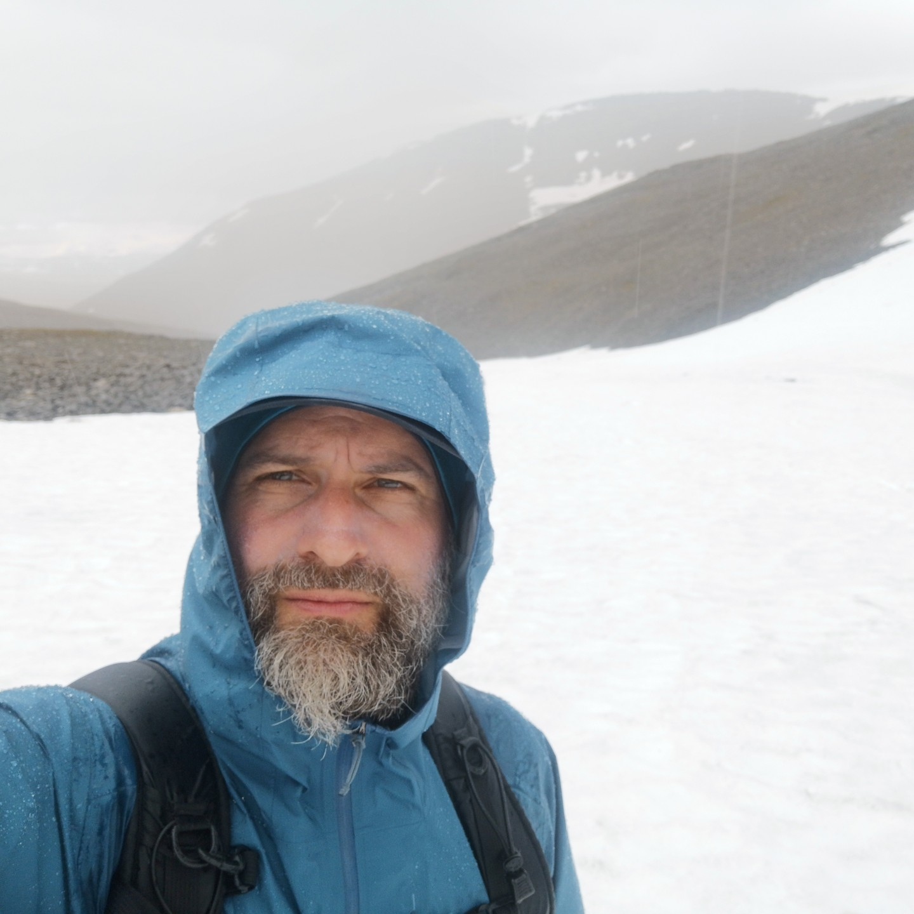
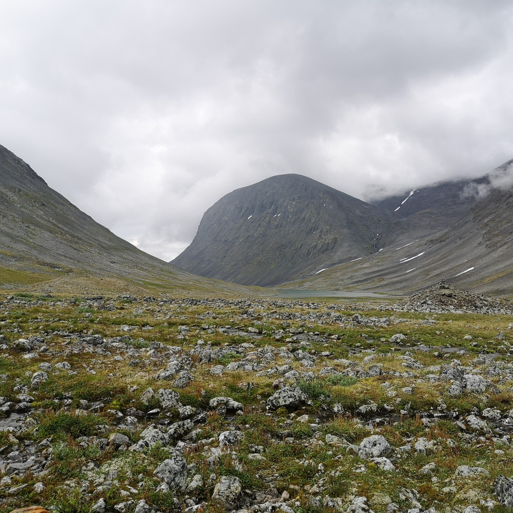
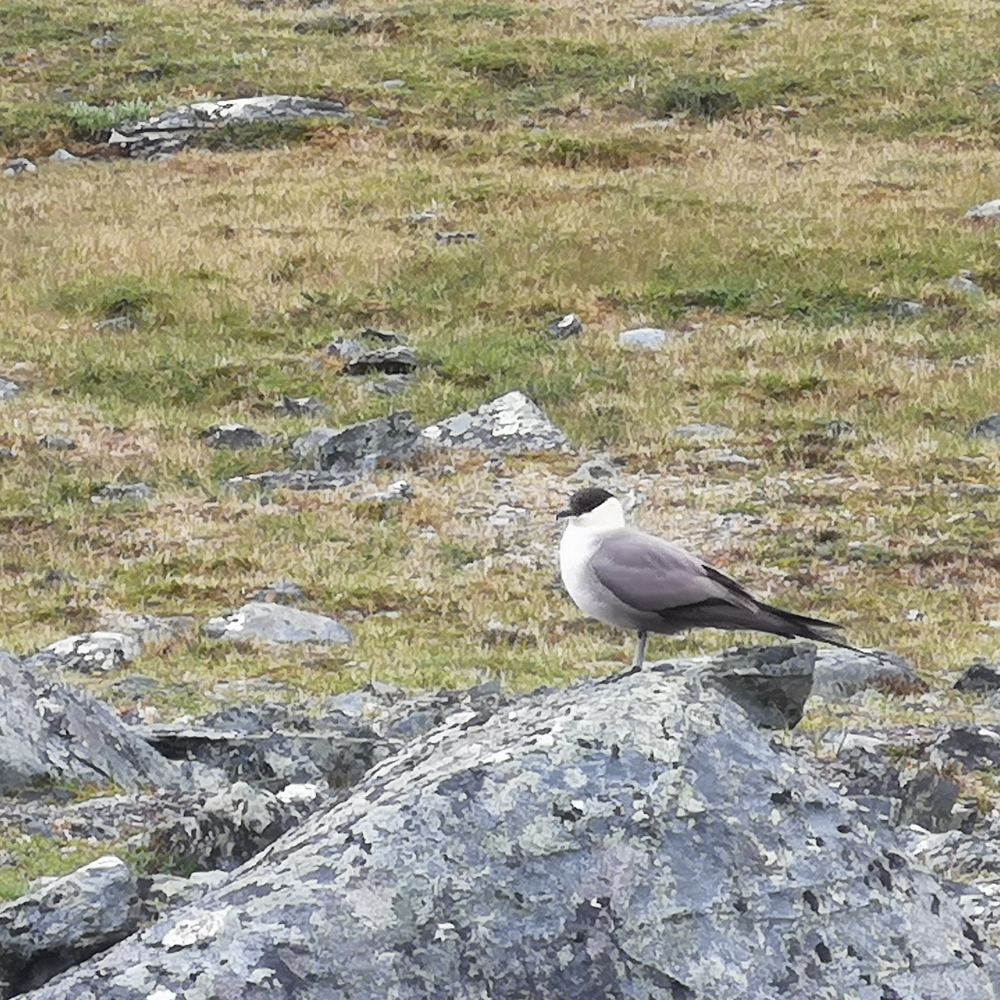
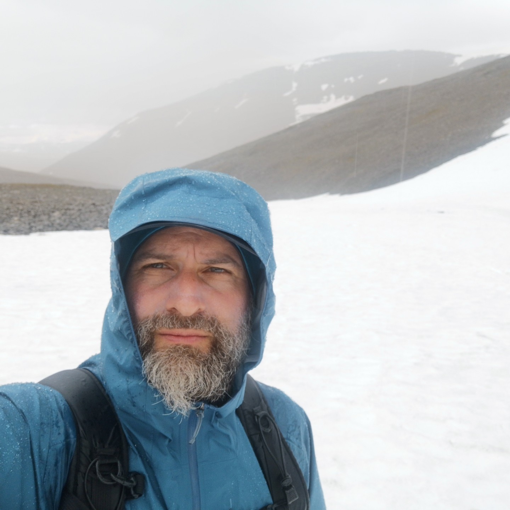
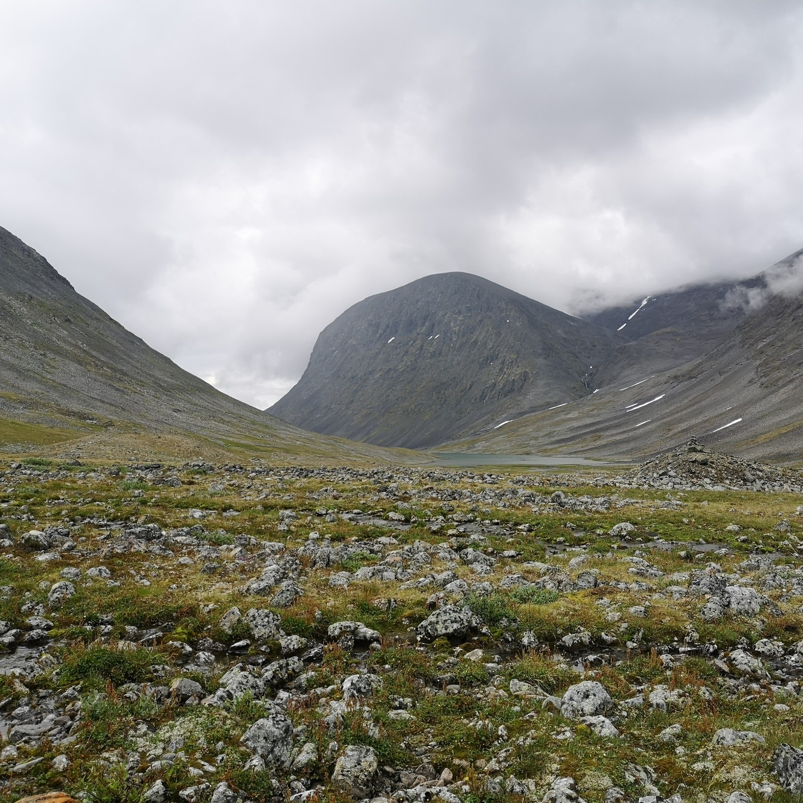
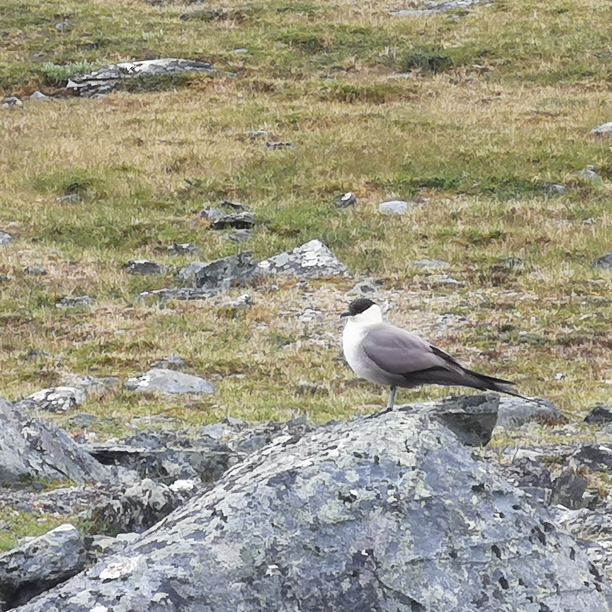
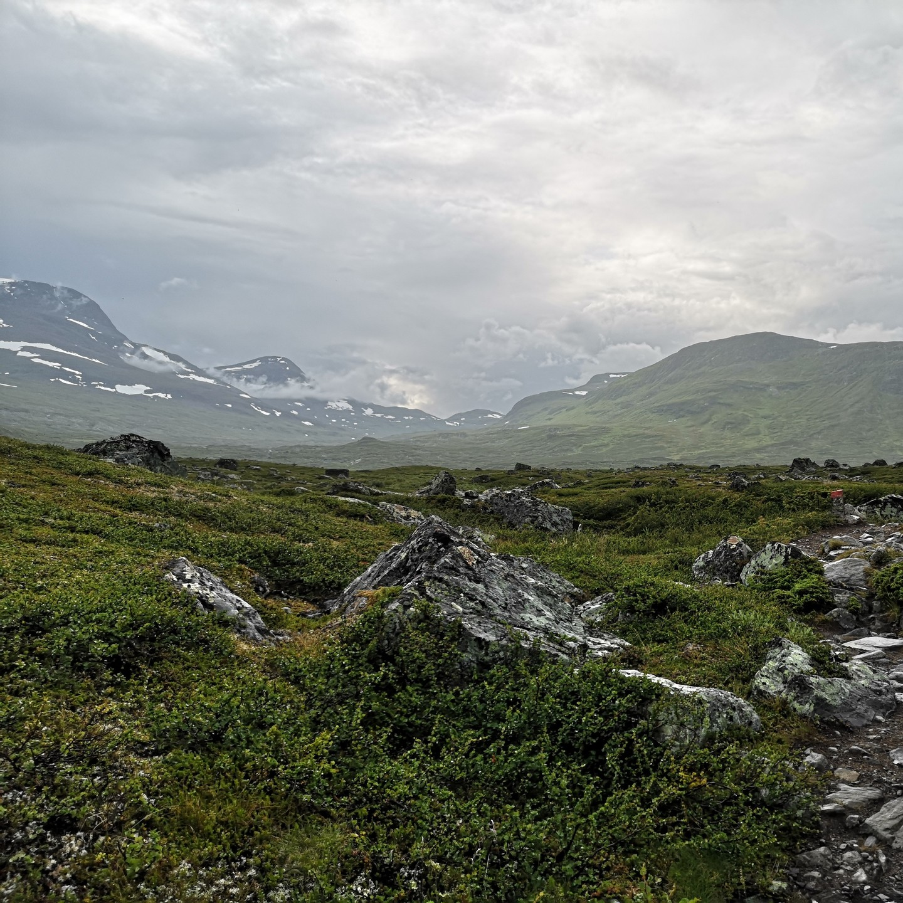
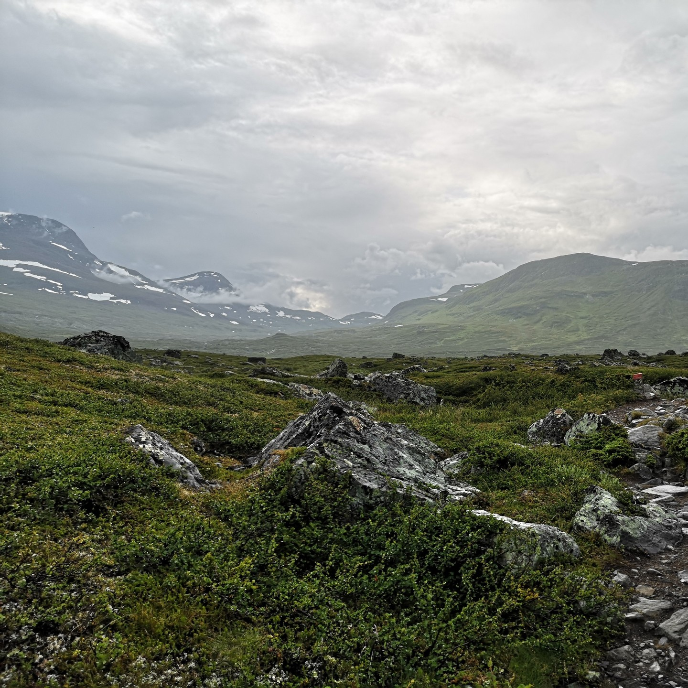

Day 4 of 6 in Swedish Lapland. This should have been a rest day and we learned our lesson. The 10...
Day 4 of 6 in Swedish Lapland. This should have been a rest day and we learned our lesson. The 10 hours of hard walking on day 3 was tough on the body, but instead of taking a day off, we attempted to walk to the highest peak of Sweden, the Kebnekaise. It would have been a 12-14 hour hike, but after 4 hours of tough ascent in difficult terrain, the clouds came, it started raining. We had to admit it was too risky and we were not fit enough to go on. We turned back to the tent, packed up and arrived at Singhi hut soaked and exhausted. It was the hardest day in terms of hours, steps and altitude difference even though we didn't reach the peak. Of course the hard work was rewarded with breathtaking views on this day too.
 


 





 
